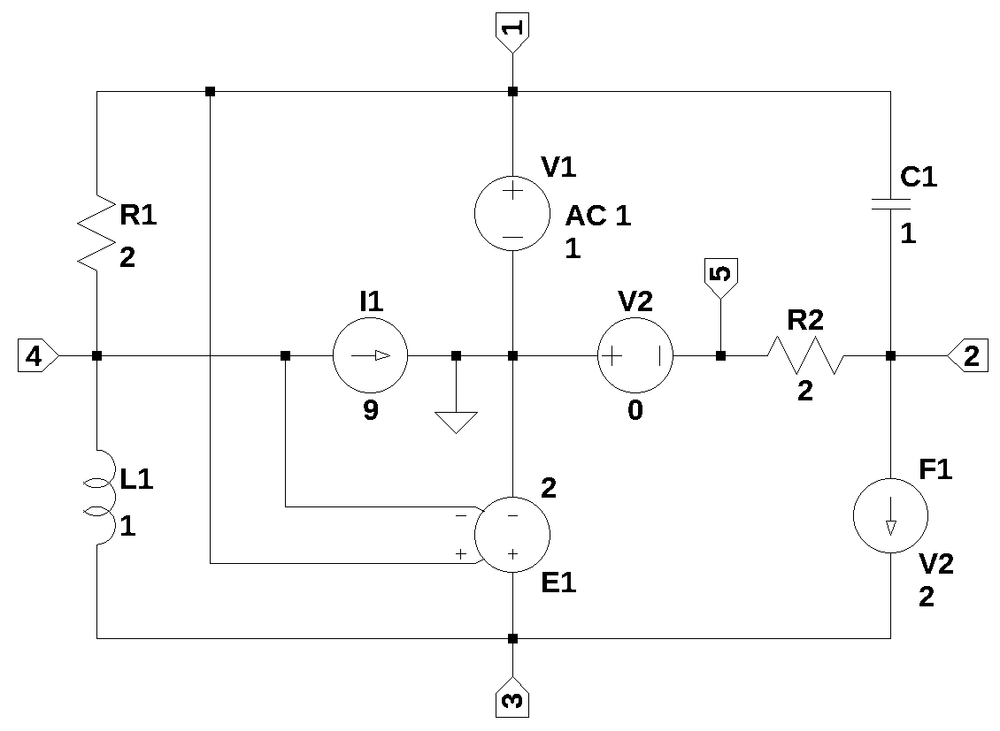

Symbolic Modified Nodal Analysis
Last update: 30 Nov 2023
Introduction
This nodal analysis code started as a translation from some C code to generate a nodal admittance matrix that I had written in 1988. I wrote this code for two reasons. Free versions of Spice for the PC didn’t exist at the time and I wanted to use some of the code from the Numerical Recipes in C [1]. The original C code worked well and calculated numeric solutions. I then started writing some C code to generate the matrices with symbolic values and then intended to use LISP to symbolically solve the equations. I didn’t get too far with this effort. The LISP code would generate huge symbolic strings with no simplification. The output was a big pile of trash that was not in the least bit useful or decipherable.
In 2014, I started to use python for my little coding projects and engineering calculations. There are some nice python libraries for numeric and symbolic calculations (such as NumPy and SymPy), so I decided to try writing a python script to generate the node equations based on the old C code I had written many years before. Part way into this project I discovered that there is a new nodal analysis technique being taught today in engineering school called the modified nodal analysis [2][3]. My motivation for reviving this coding project is my continued interest in circuit analysis and synthesis.
The modified nodal analysis provides an algorithmic method for generating systems of independent equations for linear circuit analysis. Some of my younger colleagues at work were taught this method, but I never heard of it until a short time ago. These days, I never really analyze a circuit by hand, unless it’s so simple that you can almost do it by inspection. Most problems that an electrical engineer encounters on the job are complex enough that they use computers to analyze the circuits. LTspice is the version of Spice that I use, since it’s free and does a good job converging when analyzing switching circuits.
Python code
My code started initially by following Erik Cheever’s Analysis of Resistive Circuits MATLAB code [4], to generate modified nodal equations. I somewhat followed his MATLAB file for resistors, capacitors, opamps and independent sources. The naming of the matrices follows his convention. The preprocessor and parser code was converted from my old C code. The use of pandas for a data frame is new and SymPy is used to do the math and the use of element stamps is from [5].
Inductors are being addressed in the D matrix, which is different than the way Erik Cheever’s code works. Erik’s code puts inductors into the G matrix as 1/s/L. My code puts the inductor contribution into the D matrix. Coupled inductors also affect the D matrix, so it makes sense to allow the inductors to be in the D matrix rather than the G matrix.
Network equations: The network equations are a set of independent equations expressed in this code in matrix form. There is an equation for each node based on Kirchhoff’s current law KCL and an equation for each current unknown. The current unknowns are the currents from the voltages sources, op amps, voltage controlled voltage sources, current controlled voltage sources, current controlled current sources and inductors.
The network equations are in matrix form:
\[A\cdot X = Z\]
The A matrix describes the connectivity of the resistors, capacitors and G type (VCCS) circuit elements. The column vector X are the unknown node voltages and unknown currents terms from the voltage sources and inductors. The column vector Z is made of the known voltages and currents. The A matrix is formed by four sub matrices, G, B, C and D, which are described below.
\[A = \begin{bmatrix}G B\\C D\end{bmatrix}\]
The matrix G is formed from the coefficients representing the KCL equations for each node. The positive diagonal of \(G_{k,k}\) are the conductance terms of the resistor and capacitor elements connected to node k. The off diagonal terms of \(G_{k,j}\) are the resistors and capacitor conductances connecting node k to node j. G type elements (VCCS) have input to the G matrix at the connection and controlling node positions.
The B matrix describes the connectivity of the unknown branch currents. Independent voltage sources, opamps, H, F and E type elements as well as inductors have inputs to the B matrix.
The C matrix describes the connectivity of the unknown branch currents and is mainly the transpose of B matrix, with the exception of the F type elements (CCCS) and includes the E type value.
The D matrix describes also connectivity of the unknown currents. The D matrix is composed of zeros unless there are controlled sources and inductors in the network.
The X vector is comprised of the V and J vectors as shown below.
\[X = \begin{bmatrix}V\\J\end{bmatrix}\]
The V vector contains the node voltages which are the voltage unknowns to be solved for. The J vector contains the unknown currents from each voltage source.
The Z vector is comprised of the I and Ev vectors as shown below.
\[Z = \begin{bmatrix}I\\Ev\end{bmatrix}\]
The I vector contains the known currents and the Ev vector contains the known voltages. The Ev designation is used for the voltage vector (and not simply ‘E’) because SymPy uses e and E sometimes for the mathematical constant 2.71, sometimes called Euler’s number. The use of E or e as a symbol in SymPy was causing errors when the code was run.
Putting all the parts together:
\[\begin{bmatrix}G B\\C D\end{bmatrix} \cdot \begin{bmatrix}V\\J\end{bmatrix} = \begin{bmatrix}I\\Ev\end{bmatrix}\]
Stamps: Stamps are templates for modifying the B, C and D matrices and facilitate the construction of the matrices. The stamps used in this implementation of the MNA follow the stamps of [5].
Code description
The code is divided in the following sections.
Preprocessor: The preprocessor reads in the netlist text file and removes comments, extra spaces and blank lines. The first letter of the element type is capitalized to make subsequent parsing of the file easier. The number of lines are counted and the number of entries on each line are checked to make sure the count is consistent with the element type.
Parser: The parser code loads the preprocessed netlist into a data frame. A report is generated which consists of a count of the element types in the netlist.
Matrix formulation: Each of the matrices and vectors are generated.
Circuit equation generation: The circuit equations are generated in a for loop. Sympy automatically does some simplification according to its default settings. Two for loops perform the matrix multiplication on the equation.
\(A\cdot X = Z\)
Code validation
Basic validation of the code consisted of analyzing simple networks and examining the results. A more comprehensive evaluation of the code was performed by solving test circuits and comparing the results to LTSpice. As of October 2023 all the element types have been tested. See the circuits used for validation here. The validation circuits range from simple to large and complex. The largest validation circuit consist of 32 nodes, 59 branches and multiple instances all of the element types. For this large test circuit, there are small numerical differences between the Python modified nodal analysis (MNA) code results and the LTSpice solution, which are describe in the test report. Additionally, various interesting problem circuits have been solved using the MNA code and comparing the results to LTSpice. These problem circuits can also be found in the github repository. Code verification often looks at requirements or specifications versus what was implemented. This project didn’t have a formal set of requirements, only a general goal of implementing symbolic MNA using the Python libraries. No formal software or code verification is included.
User’s guide
A netlist is text file that contains the connectivity information of the circuit. A netlist in the input to the analysis code and the output are a set of equations that can be solved for the unknown voltages and currents. The circuits are described in terms of the components and the connections to the other components. Netlist can be generated with a text editor or exported from a schematic capture program. LTspice can be used to draw the schematic and a netlist can be exported to the python code to generate the network equations.
Netlist file format:
A circuit description in spice, which is called a netlist, consists of a statements defining each circuit element and its connection to circuit nodes. A node is a any point on a circuit where two or more circuit elements meet. The nodes are numbered from 1 to N in any order and node 0 is the ground node or circuit common. A ground node is required. Choose a ground or reference node, which usually is taken to be at a potential of zero volt. All other node voltages constitute n unknowns. The nodes should be numbered in consecutive order. Each line in the netlist are either comments, spice directives or circuit elements.
Spice directives are commands to spice and the first character on the line is a period. Comment lines start with a * or ;. The default file extension is ‘.net’. The python code does some preprocessing of the netlist to check the basic formatting of the netlist is correct.
The preprocessor performs the following steps: - remove blank lines and comments - convert first letter of element name to uppercase - removes extra spaces between entries - counts number of entries on each line to make sure the count is correct and counts each element type
The element types that are supported are resistors, capacitors, inductors, independent sources and controlled sources. Each line in the netlist file contains a circuit element.
The format for the element description is
letterXXX n1 n2 valueWhere:
letter signifies the element type, i.e. R, L, C, V, I, O, E, F, G, H or K
XXX is a string of letters or numbers that uniquely identify the element.
n1, n2 and value are the terminal nodes and the value of the element.
The element types are described in the following sections.
Resistors, capacitors and inductors:
The resistors, capacitors and inductors are described by the following line:
R/L/CXXXXXXX N1 N2 value Where:
XXX = the name of the component, can be any length
N1 = the first terminal
N2 = the second terminal
Value = component value in ohms, farads or henrys.
For example, a resistor named R1 connected between nodes 1 and 2 with a value of 3000 ohms.
R1 2 4 3000 Spice supports other parameters, but these are not allowed in this python implementation.
Coupled inductors:
Two coupled inductors are described by the following line.
KXX LYY LZZ VALUE The parameters are:
LYY = the name of the first coupled inductor
LZZ = the name of the second coupled inductor
VALUE = the coefficient of coupling, K, where 0 < K
The orientation of the inductors is determined by the first node, which is considered to be the dotted node. When LTspice generates a net list the phasing dot gets assocated with the negative node. This does not seem to affect the equations generated by the python code. LTspice uses the coupling coefficient, k. The symbolic equations use the mutual inductance, M.
\[M = k\sqrt{L_1L_2}\]
Independent sources:
A voltage source is described by the following line.
VXX N+ N- VALUE The parameters are:
N+ = the name of the positive terminal
N- = the name of the negative terminal
VALUE = the value of the DC voltage
A current source is described by the following line.
IXX N+ N- VALUE The parameters are:
N+= the name of the positive terminal, current leaves this terminal (pointy end of the arrow)
N- = the name of the negative terminal VALUE = the value of the DC current
Controlled sources:
The voltage-controlled dependent sources are defined using statements of the form
GXX or EXX nout+ nout- nc+ nc- gain where E is a voltage-controlled voltage source, G is a voltage-controlled current source, the output voltage is connected between nodes nout+ and nout-, and the control voltage is measured at node nc+ with respect to node nc-.
Examples:
E1 5 1 4 3 10defines a voltage source that makes node 5 a voltage 10*(v4 − v3) above the voltage at node 1.
G1 2 1 5 8 50 defines a current source connected between node 2 (the + node) and node 1 and supplying a current 50 *(v5 − v8).
The current-controlled dependent sources are defined by statements of the form
FXX or HXX nout+ nout- vcontrol gain where F is a current-controlled current source, H is a current-controlled voltage source, and the output current source is connected between nodes nout+ and nout-, with positive current flowing through the source from node nout+ to nout-. The control current flows from the positive node of the source vcontrol through the source and out the negative node.
Examples:
Fds 11 9 Vsens 1.25defines a current source connected from node 11 to node 9 that generates a current 1.25 times the current flowing through the source Vsens.
H1 30 20 V5 100defines a voltage source connected from node 30 to node 20 and supplying a voltage 100 times the current through the source V5. It is frequently necessary to add a voltage source with value 0 volts to the circuit to sense the control current for these sources.
The direction of positive controlling current flow is from the positive node, through the source, to the negative node of VNAM. VALUE is the current gain.
Op Amps:
An opamp component is described by the following line.
OXX N+ N- VoutThe output of the opamp is a voltage source. Two input terminals are at the same potential.
The op amp element is assumed to be an ideal op amp and use of this component is valid only when used in circuits with a DC path (a short or a resistor) from the output terminal to the negative input terminal of the op amp. No error checking is provided and if the condition is violated, the results will be likely erroneous. Need to work on implementing a better opamp model.
Procedure:
1. Draw the circuit to be analyzed in LTSpice or some other schematic capture program. Label the nodes. The Symbolic Modified Network Analysis code will provide warnings for netlist formatting errors and non consecutive node numbering, but will still generate nodal equations which may be erroneous. Users should verify the results. 2. Export the netlist of the circuit and convert component values to units of Ohms, Farads and Henrys. Use scientific notation, for example, replace component values such as 2k with 2e3 and 2u with 2e-6.
3. Change Op Amp reference designators, for example U1 to O1 (capitol letter O, not zero).
4. Voltage sources and current sources need to be set to zero in some cases.
5. Modify the nodal analysis Jupyter notebook code to read the net list. Run all the cells in the notebook.
6. Copy the symbol list, the A, X and Z matrices, and the element values in dictionary format to a new notebook. See end of the nodal analysis Jupyter notebook where these items are displayed.
7. Review the test and problem circuits for examples.
Example
The example circuit contains a capactior, inductor, resistors along with independent and dependent sources. This circuit is from [6], page 69, figure 4.8, with modifications. The circuit was drawn in LTSpice and the circuit nodes are labeled. For no particular reason, the reference note was chosen to be the center node of the circuit and is connected to the ground symbol. AC analysis was performed at 1 rad/sec and over a range of frequencies. The results are compared to those obtained from LTSpice.

The netlist from LTSpice is shown below with the V1 voltage source line editied.
* SMNA_example.asc
R2 2 5 2
V1 1 0 1
I1 4 0 9
V2 0 5 0
E1 3 0 1 4 2
F1 2 3 V2 2
R1 1 4 2
C1 1 2 1
L1 4 3 1 Rser=0
* ;.ac list 0.159154943091895
.ac dec 100 0.1 100
.backanno
.endCircuit equations
The following network equations were generted by the Sympy code.
\(- C_{1} s v_{2} + I_{V1} + v_{1} \left(C_{1} s + \frac{1}{R_{1}}\right) - \frac{v_{4}}{R_{1}} = 0\)
\(- C_{1} s v_{1} + I_{F1} + v_{2} \left(C_{1} s + \frac{1}{R_{2}}\right) - \frac{v_{5}}{R_{2}} = 0\)
\(I_{Ea1} - I_{F1} - I_{L1} = 0\)
\(I_{L1} - \frac{v_{1}}{R_{1}} + \frac{v_{4}}{R_{1}} = - I_{1}\)
\(- I_{V2} - \frac{v_{2}}{R_{2}} + \frac{v_{5}}{R_{2}} = 0\)
\(v_{1} = V_{1}\)
\(- v_{5} = V_{2}\)
\(- ea_{1} v_{1} + ea_{1} v_{4} + v_{3} = 0\)
\(I_{F1} - I_{V2} f_{1} = 0\)
\(- I_{L1} L_{1} s - v_{3} + v_{4} = 0\)
Symbolic solution
Sympy was used to solve the network equations and the node voltage results are shown below.
\(v_{1} = V_{1}\)
\(v_{2} = \frac{C_{1} R_{2} V_{1} s + V_{2} f_{1} - V_{2}}{C_{1} R_{2} s - f_{1} + 1}\)
\(v_{3} = \frac{I_{1} L_{1} R_{1} ea_{1} s + R_{1} V_{1} ea_{1}}{L_{1} s + R_{1} ea_{1} + R_{1}}\)
\(v_{4} = \frac{- I_{1} L_{1} R_{1} s + L_{1} V_{1} s + R_{1} V_{1} ea_{1}}{L_{1} s + R_{1} ea_{1} + R_{1}}\)
\(v_{5} = - V_{2}\)
The Jupyter notebook
The notebook for this example is here.
Links
Symbolic Modified Nodal Analysis github page.
References
- Numerical Recipes in C: The Art of Scientific Computing, William H. Press, Brian P. Flannery, Saul A. Teukolsky, William T. Vetterling, Cambridge University Press; 1988
- The modified nodal approach to network analysis, Chung-Wen Ho, A. Ruehli, P. Brennan, IEEE Transactions on Circuits and Systems ( Volume: 22, Issue: 6, Jun 1975 )
- Modified nodal analysis
- Analysis of Resistive Circuits
- ECE 570 Session 3, Computer Aided Engineering for Integrated Circuits
- D. E. Johnson, J. L. Hilburn, and J. R. Johnson, Basic Electric Circuit Analysis, Prentice-Hall, Inc. 1978